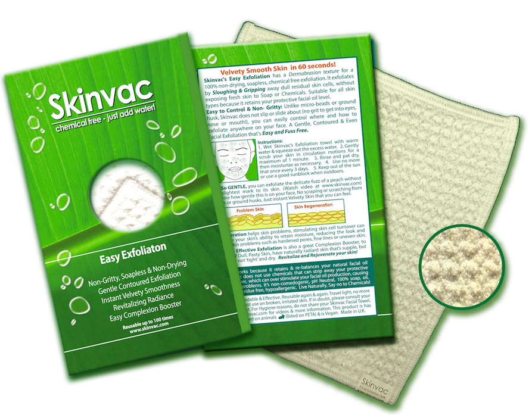
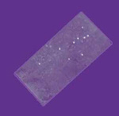
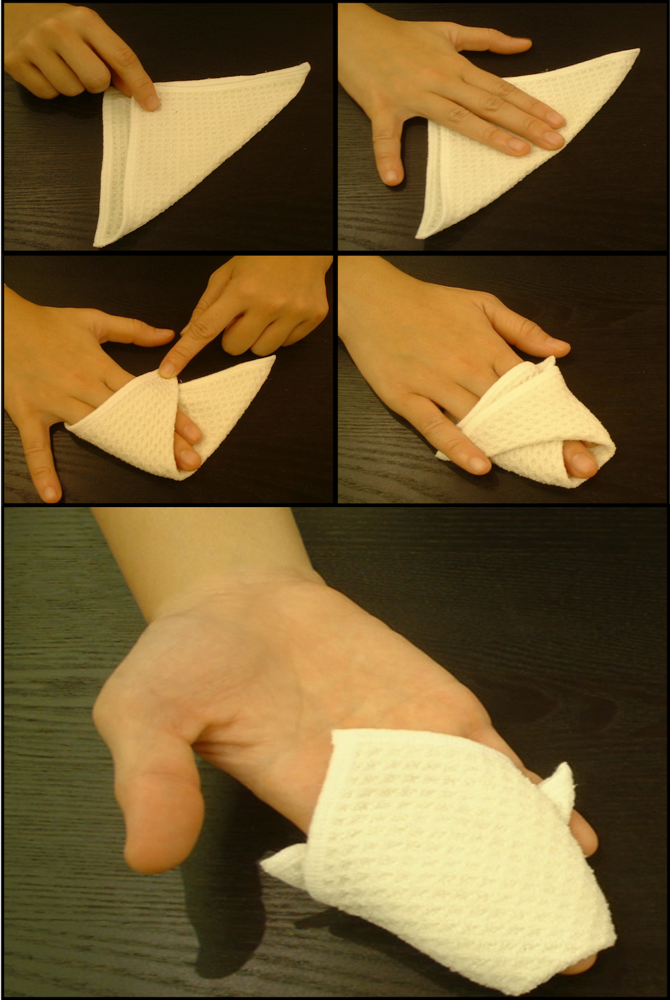
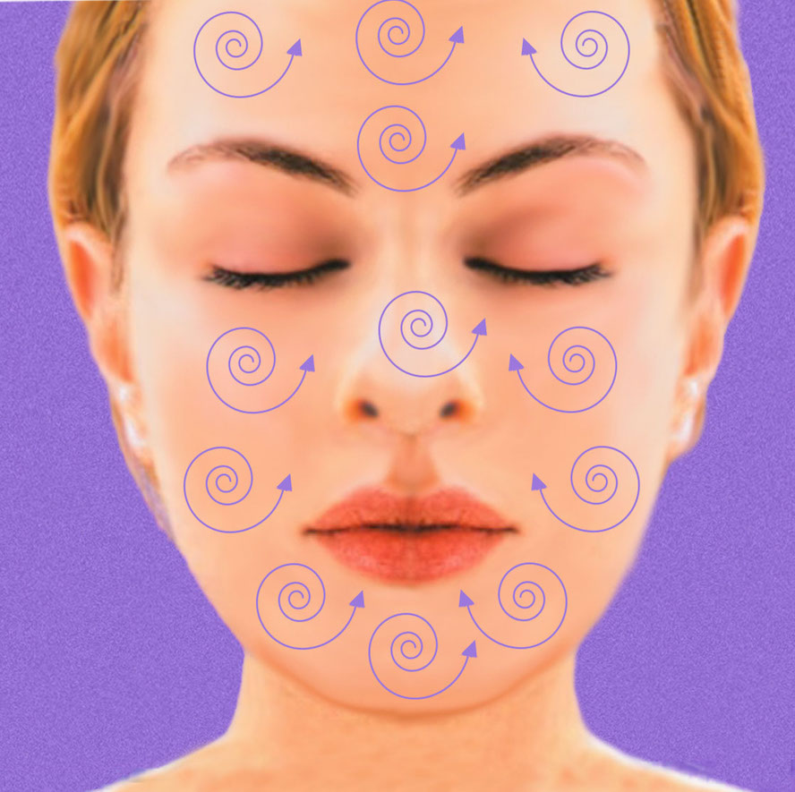

Home / Easy Exfoliation
Exfoliate your skin at home with Skinvac
Feel instantly smoother in 60 seconds
Exfoliate the Easy way
With Skinvac's Easy Exfoliation, you get instant velvety skin that you can feel straight away. Your Skin remains Supple as you never exposed fresh skin to soap or chemicals.
✔️ It's a Soapless Exfoliation that does not strip away natural facial oil.
✔️ Easy to use, the cloth contours to you face, you have full control over the pressure and areas to work on.
✔️ Grit free, there are no micro-beads or ground husk to slide about or get into eyes, nose, mouth or hair!
✔️ Exfoliate Oily Skin, Normal Skin and Combination Skin.
✔️ It works with water, which is suitable for sensitive skin.
What makes a good Face Exfoliant?
The Skinvac Face Exfoliation cloth has super fine fibres woven into a gridded texture that works just like gritty face scrub. The ups and down ridges of the surface knit together to form the exfoliant. It is a physical exfoliant that you can wrap around your fingers to make a pad. It exfoliates comfortably without drying out your face. Here is a close up of the gridded texture in the video below.
WATCH! Skinvac is SO GENTLE that you can exfoliate the very thin and delicate fuzz of a peach without the slightest mark to its skin. Imagine how gentle this is on your face, No scraping or scratching from beads or ground husks, Just instant Velvety Skin that you can feel.
How to tell when you need to Exfoliate?
Stick small piece of clear sticky tape on your forehead, cheek or chin and gently peel off, if you see white patches of clumped skin cells, you need to exfoliate. If you also find that your make up or tanning lotion is patchy looking, exfoliating will help smooth the skin before you apply make up.
Instructions to Exfoliate:
1. Wash your face thoroughly with warm water.
2. Wet the Skinvac cloth with warm water and squeeze out the excess. It should be wet but not retain enough water to drip.
3. To make an exfoliation pad that contours to your face, fold the cloth in half and wrap around your fingers as shown in the picture and video below:

1. Gently scrub your face in small circular motions for a maximum of 1 minute.
2. Rinse and Pat your face dry.
3. Moisturize with a good quality natural cream.
4. Repeat once or twice weekly.
You can apply the exfoliation pad to areas that you normally avoid with gritty face scrubs. You exfoliate the softer dips in your face like the sides of your nose and chin area without applying more pressure.
Care Instructions
Hand or machine wash thoroughly after each use. Do not use fabric conditioner, do not tumble dry or iron. Keep your Skinvac Easy Exfoliator clean and dry when not in use.
FAQ
Q. What is Exfoliation
A. "Exfoliation involves the removal of the oldest dead skin cells on the skin's outermost surface" [read more at Wikipedia.org]. Think of it like brushing your hair to remove dead hair.
Q. Why Exfoliate?
A. Regular Effective Exfoliation is a Complexion Booster, get rid of Dull skin, have naturally radiant skin. With Skinvac exfoliation, you can feel instant velvety smoothness, without any dryness. Some famous beauty vloggers shave their face to smooth it out before applying make up. You don't have to go that far, with Skinvac, you can exfoliate your face like a pro and have a smoother feel in less than a minute.
Q. Is it a suitable Facial Exfoliation for Sensitive Skin?
A. Skinvac Facial Exfoliation cloth works with just water and there are no gritty irritants or granules. This makes it particularly suitable for sensitive skin. You can control the pressure easier than you can with gritty scrubs. Go gentle, there is no need for applying to much pressure.
Q. When is the Best time to Exfoliate?
A. A good time to exfoliate is before Bedtime, then you can rest yourself and keep your skin clean and avoid exposure to the sun. You can also exfoliate to smooth your skin in preperation for tanning lotion or make up preparation.
Q. Do I have to stay out of the sun after Exfoliation?
A. It is best to avoid being in the sun not only after exfoliation, but at other times also, unless you use a sufficiently rated SPF Sunblock and apply it correctly. Sunblock is also known as sun screen. It is a cream, lotion or oil that contains particles like zinc oxide to reflect some of the sun's UV rays and protects your skin from sunburn, this is even more essential if your skin is light and fair.
Q. How long does the Exfoliation cloth last?
A. Up to 100 washes for maximum effectiveness.